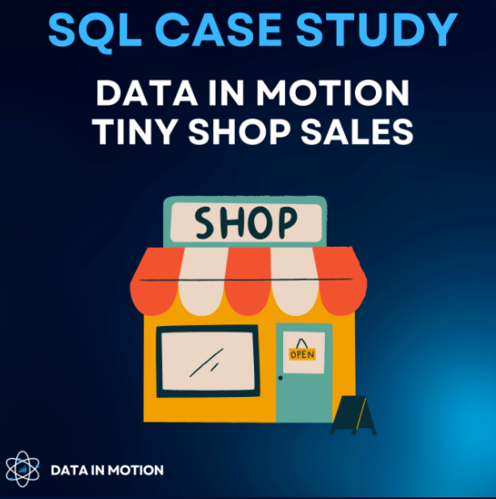
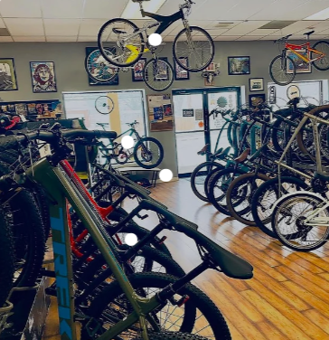
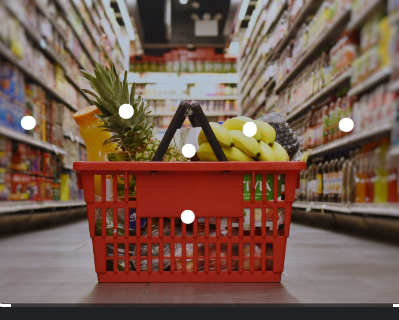
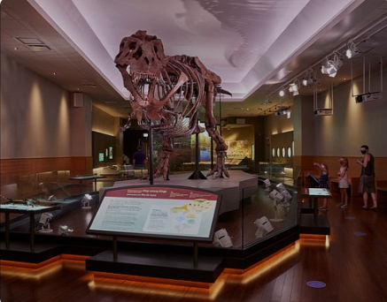
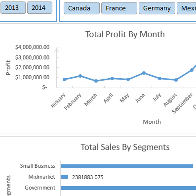

Recent Projects
This project involves the analysis of all failed bank data in the United States from 2000 to 2020 using Ms. Power Bi.
Find out the Total Failed banks, Names of failed banks, states, etc.

This project presents my participation in week 2 of the third round of the SQL Challenge organized by Data In Motion, LLC.
In this project, you're going to find out: Which product has the highest price? Which customer has made the most orders? , What is the total revenue per product? Find the day with the highest revenue. and ........

This project presents the analysis of the bike sales dataset using Excel, from the data cleaning (e.g., removing duplicates) to the making of an interactive Excel dashboard..

The supermarket sales project presets the analysis of the supermarket dataset by using PowerBI to produce the performance dashboard, considering the KPIs of sales.
In this project, you'll figure out: the net sales, item sold,total orders, customer satisfaction, etc.
This project is the result of an online survey of data analytics professionals all over the world. The project involves the whole process of cleaning data (using Excel and Power Bi) into a meaningful dataset to produce the data analytics professional breakdown dashboard by using Power Bi.

This short project presents the analysis of U.S.A. museum dataset using SQL. In this project, you'll find out: the total number of museums in the U.S.A., A state with the most museums, Museums with the highest Revenue, and so on.

This analysis was done by using Excel from the data cleaning to the dashboard.